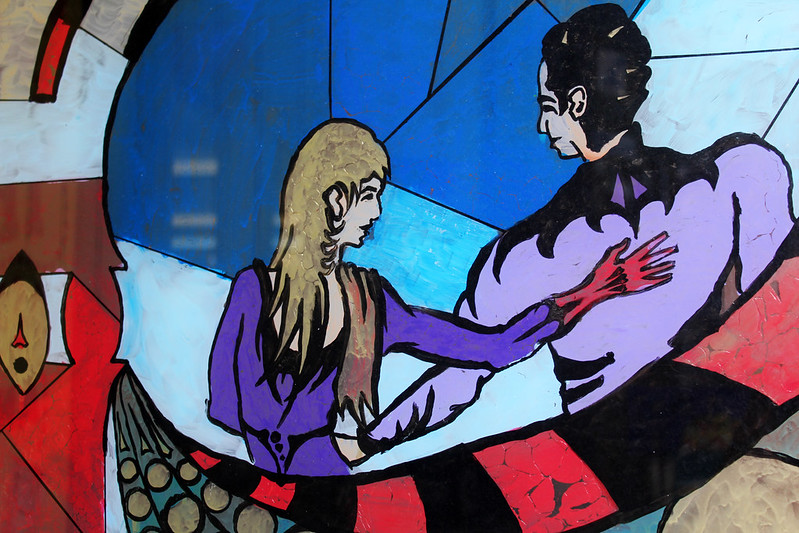

Date/Time: Thursday, 6 February 2020 - 2:00pm to 3:30pmLocation: CESTA (4th floor Wallenberg hall)
The SF Nexus is an ongoing project to restore the "great unread" of mass-market speculative fiction to the literary canon, making a significant proportion of published literature available for emerging research in genre studies and cultural analytics. Situating the SF Nexus within a theoretical shift in the digital humanities that recognizes the constructed nature of corpora, data modeling, and visualization, this talk will outline the project's curation of a copyrighted dataset through all stages of the data life cycle. Presented as a model for its expansion into a collaborative, multi-institutional project, this presentation will overview the digitization of SF novels and magazines, their ingestion and preservation in HathiTrust's Digital Library, their curation through extracted feature sets online, and the development of a legal and technical framework for a distributed system of localized access centers in participating libraries. The presentation will conclude by exploring a new wave of digital curation and analysis, inspired by the collections as data movement, speculating on what can be learned from recent innovations in machine learning for vector space modeling to study the politics of world-building in "New Wave" speculative fiction.
Alex Wermer-Colan is a postdoctoral fellow in Temple University Libraries' Loretta C. Duckworth Scholars Studio, where he directs research and pedagogical projects that bridge traditional and digital methods for cultural studies and analytics ranging from the modernist to the contemporary era. His editorial criticism and scholarly writing has appeared in Twentieth Century Literature, The Yearbook of Comparative Literature, The D.H. Lawrence Review, Lost & Found: The CUNY Poetics Document Initiative, Indiana University Press, and The Los Angeles Review of Books.
This event is free and open to the public, and tea and coffee will be served.
If you cannot join us in person, please consider watching the broadcast of this seminar via zoom.
